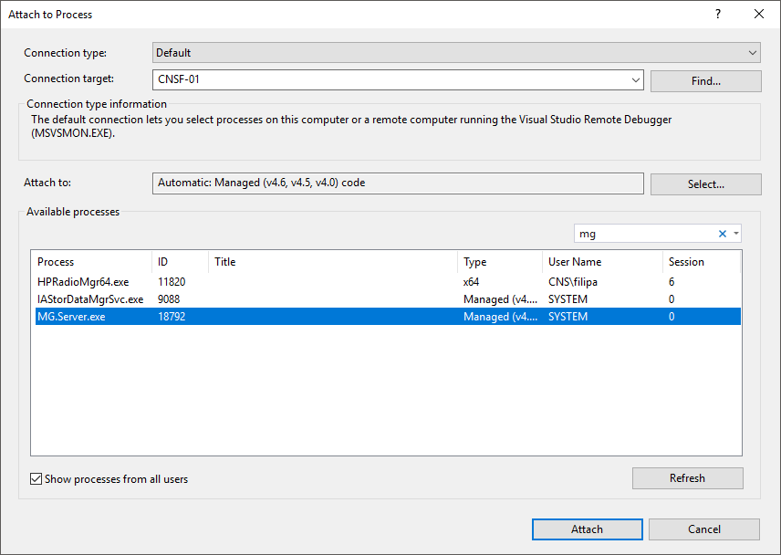
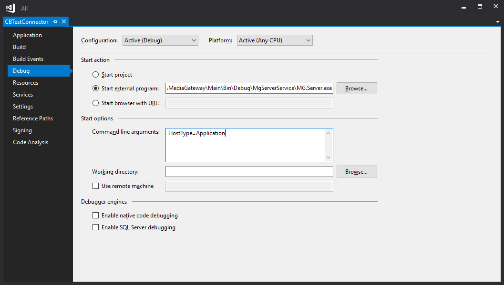

How To
To get you up to speed with CB Connector SQK, we've listed some of the most common questions on this page.
How To: Debug your solution
Attach to running processes with the debugger
To attach to a process on your local computer:
Open Visual Studio as Administrator.
In Visual Studio, select Debug > Attach to Process to open the Attach to Process dialog box.
Connection type should be set to Default. Connection target should be your local machine name.

In the Available processes list, find and select MG.Server.exe to attach to.
Select Attach.
Review the build and debug properties
In Solution Explorer, select the project.
Select the Properties icon, press Alt+Enter, or right-click and choose Properties to open the Properties window.
In the Configuration list, choose Debug.
Under Start action, select Start external program, and add the fully qualified path and name of the service.
Add HostType=Application in the Command line arguments,

Use File > Save Selected Items or Ctrl+S to save changes.
Set breakpoints in the project.
Right-click the project and choose Set as Startup Project.
Make sure the Solutions Configuration field is set to Debug.
Caution
If debugging does not hit your breakpoints, make sure that your DLL output (by default, the <project>/Debug folder) is the location that the calling service is calling.
How to: Design Your Meta Model
Do the following:
Decide what objects you want to include in your Meta Model.
The first step in designing your Meta Model is deciding which aspects of your specific data source are important enough to include in the model.
When you have a reasonably complete set of objects, move on to the next step: deciding how these objects relate to each other.
Determine which of these objects should be tables and which should be columns within those tables.
No rules exist about what to identify as tables and which of the attributes in the system belong to which table.
When implementing the Entity Relationship Model (ERM) in a relational database, you should take a look at the following table.
ER Model Relational Model Regular Entity Create a relation (table) with primary key and non-key attributes (columns). Weak Entity Create a relation with a composite primary key (which includes the primary key of the entity on which this weak entity depends) and non-key attributes. One-to-one (1:1) relationship Place the primary key of either entity in the relation for the other entity or do this for both entities. One-to-many (1:M) relationship Place the primary key of the entity on the one side of the relationship as foreign key in the relation for the entity on the many side. Many-to-many (M:N or M:M) relationship or associative entity Create a relation with a composite primary key using the primary keys of the related entities, plus any non-key attributes of the relationship or associate entity. Many-to-many (M:N or M:M) relationship or associative entity with additional key(s) Create a relation with a composite primary key using the primary keys of the related entities and additional primary key attributes associated with the relationship or associative entity, plus any non-key attributes of the relationship or associative entity. Many-to-many (M:N or M:M) relationship or associative entity with its own key Create a relation with the primary key associated with the relationship or associative entity, plus any non-key attributes of the relationship or associative entity and the primary keys of the related entities (as foreign key attributes). Supertypes and Subtypes Create a relation for the supertype, which contains the primary key and all non-key attributes in common with all subtypes, plus create a separate relation for each subclass with the same primary key (with the same or local name) but with only the non-key attributes related to that subclass. Define tables according to your determination of how you need to organize the objects.
How to: View CB Server Error Log File
View the CB Server error log to ensure that Connect Bridge processes have completed successfully. This can be helpful to detect (in order of importance) error messages, warning messages, and informational messages.
By default, the error log is located at Program Files\Connecting Software\Connect Bridge\MgServerService\logOutputfile.txt.
A new error log is created each time an instance of CB Server is started.
You can specify what kind of messages should be logged into the CB Server error log file.
To monitor the content of the CB Server error log file from Windows PowerShell in real time, do the following:
Get-content "C:\\Program Files\Connecting Software\Connect Bridge\MgServerService\logOutputfile.txt" -Wait